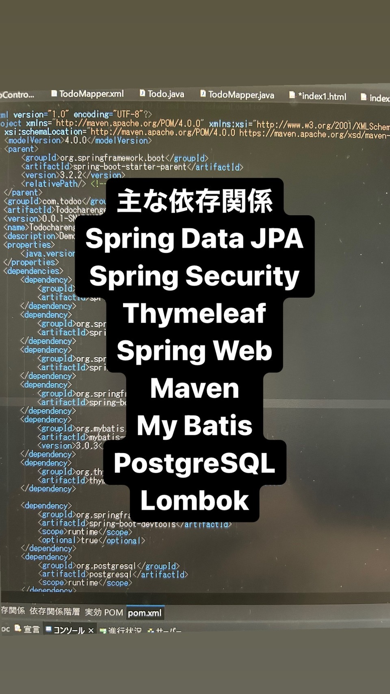
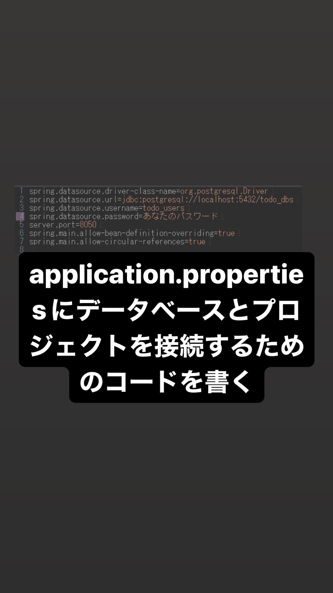
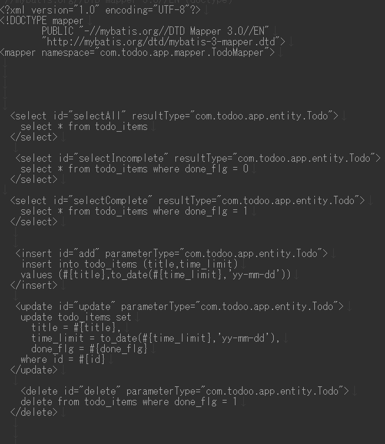
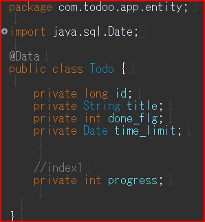
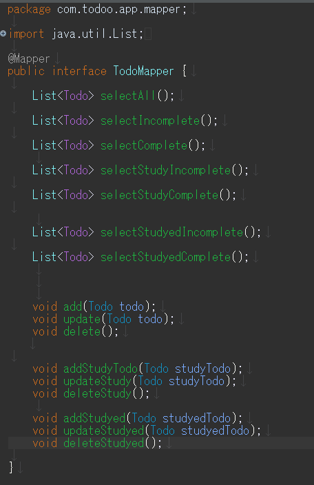
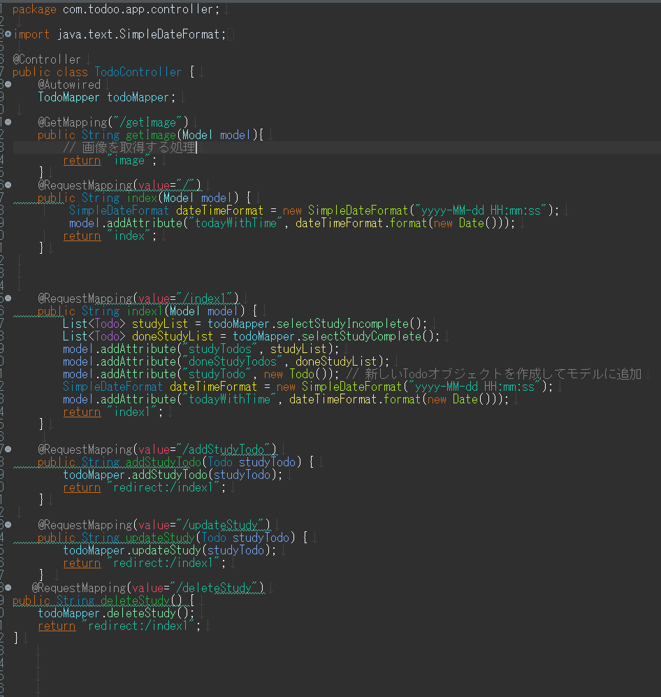
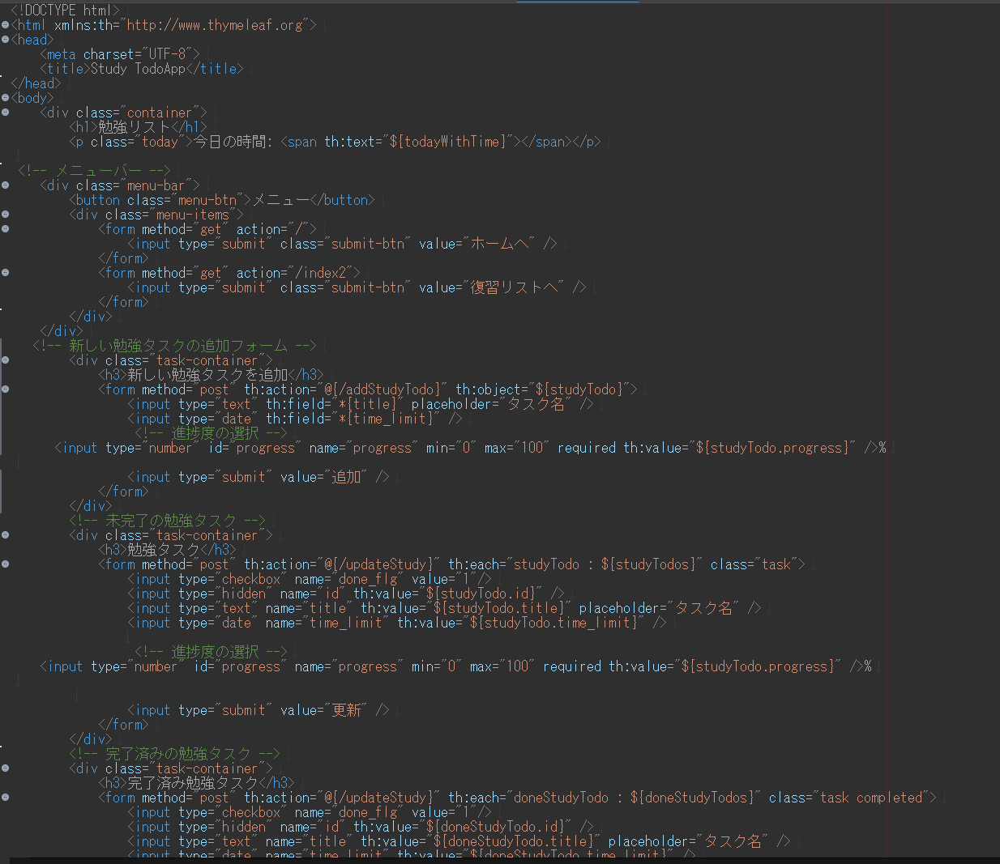

③それぞれのクラス
主な依存関係
型：Maven Javaversion：17
プロジェクト名：Todocharenge

1.DBに接続しよう
applicationpropertiesを書こう

Mapper.xml
マッパーの定義: mapper タグ内の namespace 属性は、このマッパーがどのJavaインタフェースと関連付けられるかを指定します。つまり、このマッパーは com.todoo.app.mapper.TodoMapper インタフェースと対応しています。

テーブルのデータを保持するためのentityクラス

@Data アノテーションは、プロジェクトで Lombok ライブラリを使用する場合に便利なアノテーションの1つです。このアノテーションをクラスに付与すると、Lombok がコンパイル時に自動的にコードを生成します。具体的には、以下のメソッドを自動的に生成します。
Mapperクラス
MyBatis を使用してデータベースとやり取りするためのマッパーインターフェースです。MyBatis は、SQL クエリと Java メソッドをマッピングすることで、データベースとのやり取りをシンプルにします。

@Mapperアノテーションにより、MyBatis が XML の SQL 情報から自動で作成してくれます。これによってJava コード内で SQL クエリを直接記述する必要がなくなり、データベースとのやり取りが簡素化されます。
TodoControllerクラス
Spring Framework を使用して Web アプリケーション内の HTTP リクエストを処理するコントローラーです

HTML

Thymeleafの名前空間: 要素内で xmlns:th="http://www.thymeleaf.org" を指定しています。これにより、Thymeleafの属性を使用することができます。
HTML構造: HTMLの構造は通常のものと同様ですが、Thymeleafの属性を使用して動的なコンテンツを挿入することができます。
HTML要素とThymeleaf属性: Thymeleafの属性は th: で始まります。例えば、th:text は要素のテキスト内容を置き換えます。
データバインディング: th:object 属性は、フォームのデータバインディングに使用されます。th:field 属性は、フォームのフィールドとオブジェクトのプロパティをバインドします。
反復処理: Thymeleafは反復処理をサポートしており、th:each 属性を使用してリストや配列の要素を反復処理できます。
条件付きレンダリング: th:if や th:unless 属性を使用して、条件に基づいてHTML要素をレンダリングすることができます。
リンクとフォームの処理: リンクやフォームは、通常のHTMLと同様に記述されますが、Thymeleafの属性を使用してサーバーへのリクエストを処理するためのアクションやパラメーターを指定することができます。
感想
今回のTodoアプリを通して、データベースを使用しアプリを作ること自体初体験でした。始めは、外部設計から内部設計の基礎を学びました。そこから、データベースの接続方法に苦戦しました。反省点としては、少しでも進歩した場合、１回１回動作確認をするべきだという事です。仮に修正して一気に実行し、エラーが起きた際に原因を特定することが困難なため、注意です。